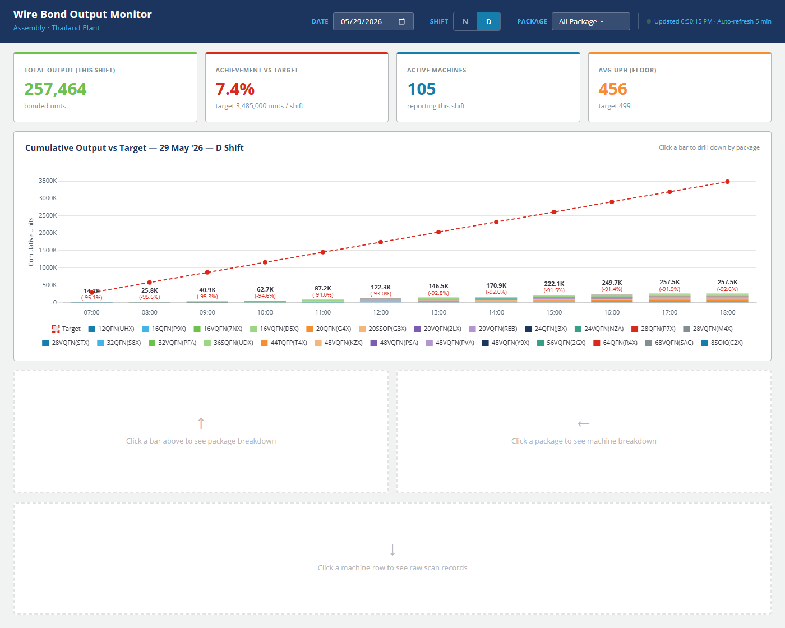
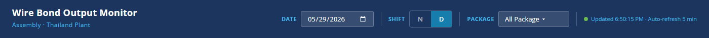
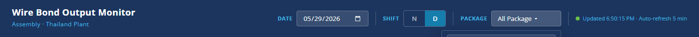
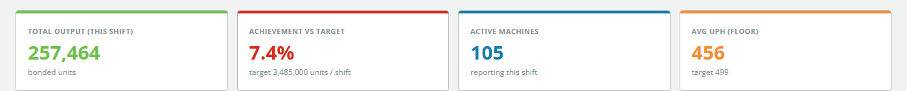
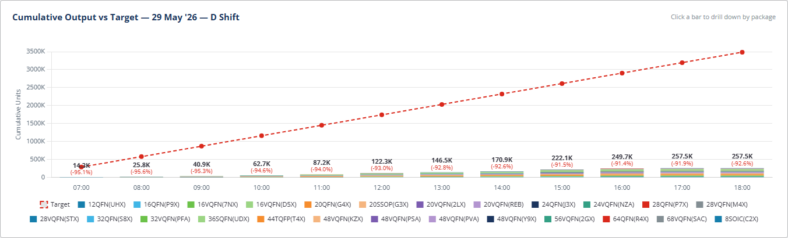
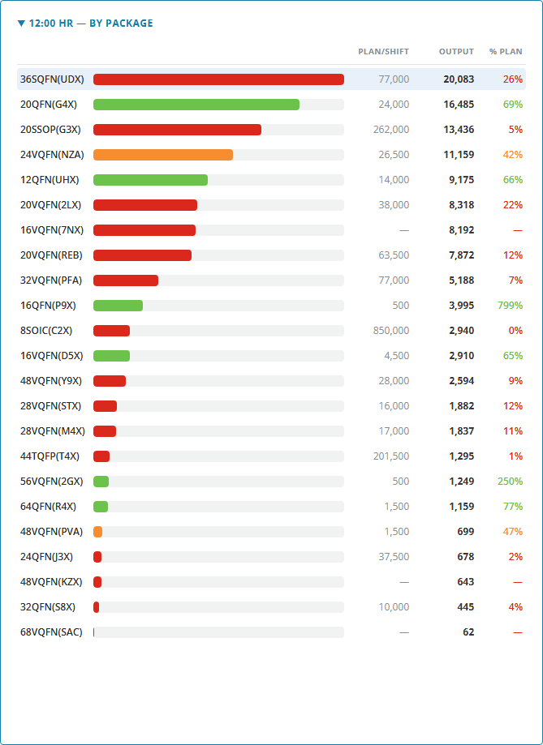
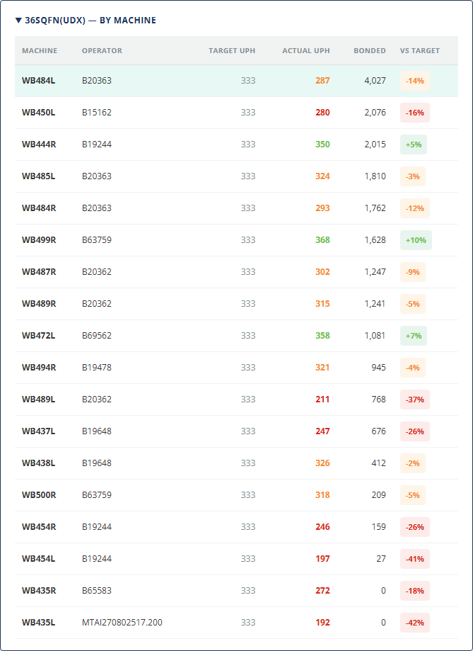
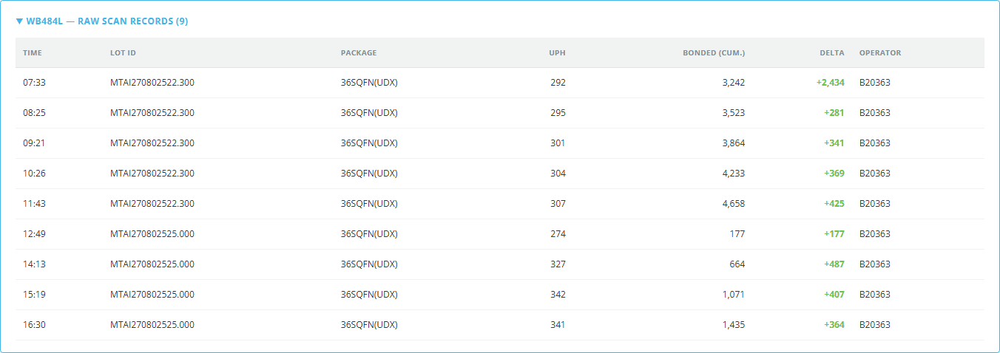
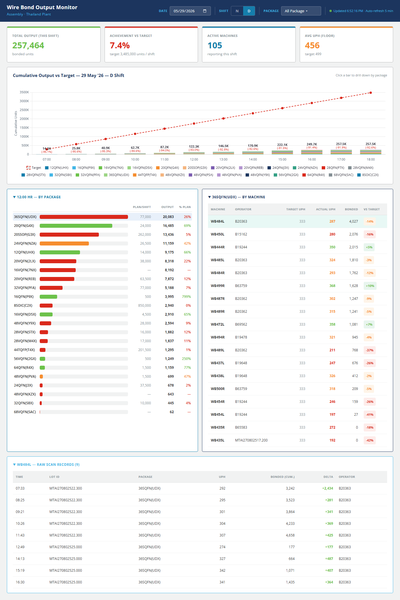

คู่มือการใช้งานหน้า web Dashboard ติดตามผลผลิต Wire Bond แบบ real-time สำหรับ Production Supervisor ใช้ตรวจสอบ output ต่อกะ เปรียบเทียบกับ target และเจาะลึกถึงเครื่องและ lot ที่มีปัญหา
หน้าจอประกอบด้วย 4 ส่วนหลัก เรียงจากบนลงล่าง — เริ่มจากภาพรวมแล้วเจาะลึกตามต้องการ

หน้าจอ refresh อัตโนมัติทุก 5 นาที ไม่ต้อง F5 เอง — จุดสีเขียวที่มุมขวาบนแสดงสถานะ การโหลดข้อมูล (เปลี่ยนเป็นสีส้มขณะกำลังดึงข้อมูล)
แถบสีน้ำเงินด้านบนใช้เลือกช่วงข้อมูลที่อยากดู — เปลี่ยนแล้วทั้งหน้าจอจะ refresh อัตโนมัติ

ค่า default คือวันที่ของกะปัจจุบัน คลิกเพื่อเปลี่ยนวัน ใช้สำหรับดูข้อมูลย้อนหลัง
ระบบเลือกกะปัจจุบันให้อัตโนมัติตามเวลา (เช่นเปิดหน้าจอตอนบ่ายโมง = D Shift วันนี้, เปิดตอนตี 2 = N Shift วันนี้)

ขวาสุด — แสดงเวลา update ครั้งล่าสุด เช่น Updated 15:30:22 · Auto-refresh 5 min
สรุปสถานะการผลิตของกะ ณ เวลาปัจจุบัน — ดูได้ใน 5 วินาที

จำนวน bonded units สะสมทั้งหมดของกะนี้ (รวมทุกเครื่อง / ทุก package ที่ผ่านตัวกรอง) — สีเขียวเสมอ
% ของ target ของกะ — สีเปลี่ยนตามผลงาน:
เขียว ≥ 100%,
ส้ม 85–99%,
แดง < 85%
จำนวนเครื่องที่มีรายงาน scan เข้ามาในกะนี้ — ถ้าน้อยผิดปกติแสดงว่าเครื่องเยอะตัวอาจ down
ค่า UPH เฉลี่ยของทั้ง floor พร้อมเทียบกับ target UPH ที่บรรทัด "target ###" ด้านล่าง
การ์ด Achievement สีจะเปลี่ยนตาม % achievement — ถ้าเห็นสีแดงให้รีบเช็คว่าทำไม output ต่ำกว่าเป้า อาจเครื่อง down, material ขาด, หรือ operator น้อย
แสดงการสะสมผลผลิตของกะตั้งแต่ชั่วโมงแรกถึงปัจจุบัน เทียบกับเส้น target

เลื่อนเมาส์ไปที่แท่งใดก็ได้ — กล่อง tooltip จะแสดง: Output / Target / vs Target (% diff)
ถ้าเส้น target อยู่สูงกว่าหัวแท่งมากทุกชั่วโมง = production ช้า ตามไม่ทันทั้งกะ ให้รีบเจาะลึกหา bottleneck (ดู section 5)
คลิกตามลำดับเพื่อหาว่าปัญหาอยู่ที่ไหน — ชั่วโมงไหน package อะไร เครื่องตัวไหน lot ใด
คลิกแท่งของชั่วโมงที่สนใจ (เช่น 12:00) — panel ซ้ายล่างจะแสดงรายการ package ทุกตัวที่ผลิตได้ในชั่วโมงนั้น พร้อมเปอร์เซ็นต์เทียบ plan

คลิกแถวของ package ใน panel ซ้าย — panel ขวาจะแสดง machine ทุกตัวที่กำลัง run package นั้นในกะนี้

คลิกแถวของ machine ในตาราง — panel ล่างจะแสดงทุก scan record ของเครื่องนั้นในกะ เรียงตามเวลา

คลิกแท่งใหม่ในกราฟ → drill-down จะ reset เริ่มจาก package panel ใหม่ คลิก package ใหม่ → machine panel ใหม่ คลิก machine ใหม่ → records ใหม่

สีในระบบมีความหมายเสมอ — เห็นแดงต้องตรวจ เห็นเขียวคือดี
| สี | ใช้ที่ไหน | หมายความว่า |
|---|---|---|
| เขียว | KPI, progress bar, UPH, badge, delta | ทำได้ตามเป้าหรือเกินเป้า — OK |
| ส้ม | KPI, progress bar, UPH, badge | ใกล้ๆ เป้า แต่ยังไม่ถึง (70–99% หรือ -15 ถึง 0%) — เฝ้าดู |
| แดง | KPI, progress bar, UPH, badge, delta ลบ, target line | ห่างเป้ามาก (< 70% หรือ < -15%) — ต้องลงไปเช็ค |
| ฟ้า | KPI Active Machines, progress bar accent | เป็นสี neutral ไว้แสดงตัวเลขทั่วไป (ไม่ได้บอก good/bad) |
| น้ำเงินเข้ม | Header, table header, ขอบ panel | โทนสีหลักของระบบ — โครงสร้าง UI ทั่วไป |
วิธีใช้ dashboard อย่างมีประสิทธิภาพในแต่ละช่วงเวลาของกะ
% achievement ในต้นกะจะดูต่ำเสมอเพราะ target ของกะคำนวณเต็ม 12 ชม. — ที่ชั่วโมงแรก output จริงยังน้อยมาก ใช้ กราฟ vs target line ดูว่ากำลัง "ตามทัน" หรือ "ตกขบวน" จะแม่นกว่า
ถ้าสนใจเฉพาะ QFN ทั้งหมด คลิก "All QFN" ใน dropdown — KPI และกราฟจะแสดงเฉพาะ QFN
เปลี่ยน Date + Shift เพื่อดูข้อมูลของกะที่ผ่านมา — เปรียบเทียบ trend ระหว่างกะได้
ถ้าเห็น Delta สีแดง ใน records — แสดงว่า bonded_unit ลดลง อาจเกิด void / rework ตรวจที่ทาง quality
จุด refresh ติดสีส้มค้างนานกว่า 30 วิ — แสดงว่ากำลังโหลดข้อมูลผิดปกติ อาจ network หรือ database มีปัญหา
A: ระบบใช้ cumulative counter จากเครื่อง wire bond โดยตรง ลบกับ baseline ก่อนเริ่มกะ ถ้ามี lot คาบเกี่ยวข้ามกะ ระบบจะใช้ heuristic ตรวจจับและคำนวณให้ถูกต้อง ค่าจาก dashboard เป็นเลข ทางการ สำหรับ KPI report
A: Package นั้นไม่อยู่ในแผน Excel wb_plan.xlsx ของกะนี้
อาจเป็นการผลิตนอกแผน หรือยังไม่ได้ update plan
A: ระบบนับเฉพาะเครื่องที่มี scan record เข้ามาในช่วงกะ ถ้าเครื่อง run แต่ยังไม่ส่ง scan ครั้งแรก จะยังไม่นับ — รอ ~5–10 นาที
A: คลิกแท่งใหม่ในกราฟเพื่อ reset, หรือคลิก package/machine อื่นเพื่อเปลี่ยน focus ไม่มีปุ่ม "กลับ" เพราะ panel ทั้ง 3 ระดับโผล่พร้อมกัน เห็นบริบทเต็มได้ตลอด
A: ได้ แต่แนะนำใช้ tablet (≥ 10") หรือ desktop เพราะตารางและกราฟอ่านง่ายกว่า มือถือเล็กตารางต้อง scroll แนวนอน
A: หน้าจอ refresh ทุก 5 นาที + database sync จาก machine ทุก 60 วินาที → ข้อมูลล่าสุดสุดประมาณ 5–6 นาที